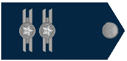

Oficiais generais
Os oficiais generais são chamados de brigadeiros e fazem
parte do Estado-Maior e alto comando da
FAB. O generalato é o topo da carreira militar. O posto é alcançado pela indicação de outros
brigadeiros à uma comissão que analisa e julga se o oficial indicado é apto a promoção. Os postos
são divididos de acordo com o grau de comando:
➣ Marechal-do-ar:
Posto empregado somente em estado de
guerra. Se isso ocorrer, um tenente-brigadeiro
é promovido ao posto de marechal. As personalidades da FAB que ocuparam esse posto são Alberto
Santos-Dumont, Pai da Aviação e Patrono da Aeronáutica Brasileira; marechal-do-ar Eduardo Gomes,
Patrono da Força Aérea Brasileira; marechal Casimiro Montenegro Filho, Patrono da engenharia da
Aeronáutica, entre outros;
➣Tenente-brigadeiro do Ar:
 É o posto mais alto ocupado por
um militar em tempos de paz. O posto de
tenente-brigadeiro é ocupado somente por aviadores, que compõem o alto comando da FAB e auxiliam o
comandante da Aeronáutica na na gestão da força. Sua divisa tem quatro estrelas;
É o posto mais alto ocupado por
um militar em tempos de paz. O posto de
tenente-brigadeiro é ocupado somente por aviadores, que compõem o alto comando da FAB e auxiliam o
comandante da Aeronáutica na na gestão da força. Sua divisa tem quatro estrelas;
➣Major-brigadeiro:
 É um oficial general de três estrelas e
o posto pode ser ocupado por oficiais
aviadores, intendentes, médicos e engenheiros;
É um oficial general de três estrelas e
o posto pode ser ocupado por oficiais
aviadores, intendentes, médicos e engenheiros;
➣Brigadeiro:
É o primeiro posto do generalato. É alcançado
por coronéis promovidos por indicação de seus
superiores. A patente de Brigadeiro é a mais alta alcançada pelo infante da Aeronáutica proveniente da
Academia da Força Aérea (AFA). Sua divisa tem duas estrelas.
Oficiais superiores
Os oficiais superiores ocupam o topo da carreira regular.
➣Coronel:
É o posto que exige a máxima experiência do
oficial de carreira. Os oficiais que alcançam a
patente de coronel possuem no mínimo 25 anos de vida militar. Eles são responsáveis pelo planejamento,
condução e comando de algumas unidades da FAB. Os coronéis, indicados ao posto de brigadeiros, passam
antes pela Escola Superior de Guerra (ESG), com o intuito de serem preparados para ocupar o alto comando
da Força Aérea;
➣Tenente-coronel:
 Atua como substituto dos coronéis. É o
posto de transição entre a parte operacional e
administrativa, principalmente para os aviadores. Neste posto, os oficiais que exercerão atividades de
comando de unidades de maior porte. Os oficiais superiores são matriculados na Escola de Comando do
Estado-Maior da Aeronáutica (ECEMAR) para serem preparados para os cargos seguintes da carreira militar;
Atua como substituto dos coronéis. É o
posto de transição entre a parte operacional e
administrativa, principalmente para os aviadores. Neste posto, os oficiais que exercerão atividades de
comando de unidades de maior porte. Os oficiais superiores são matriculados na Escola de Comando do
Estado-Maior da Aeronáutica (ECEMAR) para serem preparados para os cargos seguintes da carreira militar;
➣Major:

É o posto de entrada dos oficiais oriundos da
Universidade da Força Aérea (UNIFA) do curso de
Estado-Maior da Aeronáutica. Os majores exercem funções administrativas e operacionais. É uma das fases
mais intensas da vida de um oficial.
Oficiais intermediários
Os oficiais intermediários são marcados pelo início das
especializações e pós-graduação oferecidos pela
FAB.
➣Capitão:
É o oficial que intermedeia as ordens do Estado-Maior para as tropas, além de comandar uma
companhia, quando está na infantaria. É marcado pela estabilidade na carreira militar e pelo ingresso do
capitão na UNIFA, onde poderá se especializar em diversos cursos em gestão, política estratégica, entre
outros.
Oficiais Subalternos
Este nível é composto pelos oficiais recém formados pela AFA, pelo Centro de Instrução e Adaptação da
Aeronáutica (CIAAR), Instituto Tecnológico da Aeronáutica (ITA) ou pelas unidades da FAB.
➣1º tenente:
É o responsável pelo comando das seções, compostas por até 12 militares, quando escalados
para serviços também é responsável pela segurança e defesa das unidades. É o primeiro posto ocupado
pelos militares vindos do ITA e de algumas especialidades do CIAAR;
➣2º tenente:
É o o posto inicial ocupado por um oficial. Assim como o 1º tenente, é responsável pela
gerência das seções. O tempo de permanência no posto é de aproximadamente quatro anos;
➣Aspirante a oficial:
é considerado como praça especial, mas tem precedência hierárquica sobre sargentos e suboficiais. É
ocupado pelos oficiais vindos da AFA ou algumas especialidades do CIAAR

Graduados
O quadro dos graduados é dedicado aos sargentos e suboficiais da
Aeronáutica.
➣Suboficial:
 São o elo entre o comando e a tropa, além de serem responsáveis pela manutenção da
disciplina. Os suboficiais prestam serviços e assessoramento nas
questões a respeito da
disciplina, da moral, da carreira, da motivação, do desempenho funcional, da instrução e
capacitação, do
bem-estar, do apoio à saúde e social, da satisfação profissional e do apoio à família militar, no
círculo
das praças.
São o elo entre o comando e a tropa, além de serem responsáveis pela manutenção da
disciplina. Os suboficiais prestam serviços e assessoramento nas
questões a respeito da
disciplina, da moral, da carreira, da motivação, do desempenho funcional, da instrução e
capacitação, do
bem-estar, do apoio à saúde e social, da satisfação profissional e do apoio à família militar, no
círculo
das praças.
➣Primeiro-Sargento / Segundo-Sargento / Terceiro-Sargento:
À medida que adquirem mais tempo na carreira, os sargentos vão acumulando funções de mais
responsabilidade nas seções e tropas, podendo chegar à graduação de suboficial.
Praças
O quadro de praças é composto pelos soldados de 2ª classe, soldados de
1ª classe e cabos.
➣Cabos
São responsáveis em garantir que as ordens vindas dos sargentos sejam cumpridas pelos soldados.
Os cabos atuam como precursores na solução de problemas gerados nos serviços, além de liderarem as
esquadras.
➣Soldados de 1ª classe / Soldados de 2ª classe
Os soldados são responsáveis pela execução das ordens vindas dos cabos e atuam como auxiliares nas
seções ou batalhões de serviço, além de cuidarem da segurança das unidades.